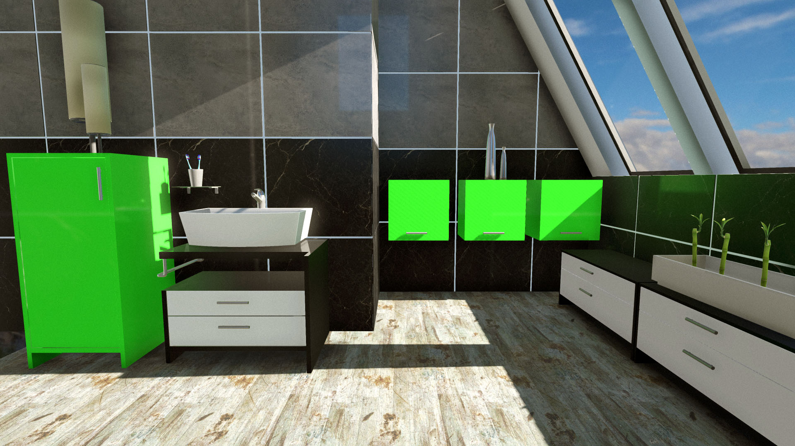

{kind=link}

(Click to enlarge)
Following is a gallery of a few shots comparing path-traced renders from Cycles to real-time renders from Armory, a 3D engine based on the same material nodes as Cycles that I have been developing for an eternity now. You can read the original introduction, and get more news here.
Cycles is a path-traced renderer capable of stunning renders. Real-time renderers on the other hand have to take many shortcuts to shorten the render times, often impacting the visual quality. These pictures aim to get as close as possible to reference images produced by Cycles, and are tuned to do so by choosing a scenes with rather simplistic lighting. The referenced images are rendered at about 50 samples, just enough to observe how the real lighting should behave.
In case of any feedback, get in touch!
@luboslenco,
Kitchen
First attempt! Some materials do not match as well as they should, reflections are too clear compared to reference and corners get too much light. Otherwise the lighting is matched decently.
Cycles
Armory

Bathroom
Basing on the previous render, blended probes of spherical harmonics for indirect illumination are added. The probes are actually captured using Cycles and then transformed to spherical harmonics for diffuse indirect, or mip-mapped equirectangular maps for glossy reflections. Thanks to this, 'bigger' corners which would not be darkened enough by screen space ambient occlusion are now perfectly dark, but the indirect lighting of other areas can be better represented as well. The main culprit here is that shadows are too sharp and light is not strong enough to add some green bloom.
Cycles

Armory 
Balcony
Subpixel morphological anti-aliasing was added to fight jagged lines more efficiently, bloom has been improved, more shadows processing, dynamic reflection filtering based on material roughness,... The reflections are surprisingly close now which is awesome, on the other hand plenty of lighting inconsistencies are still around.
Cycles

Armory

{kind=link}